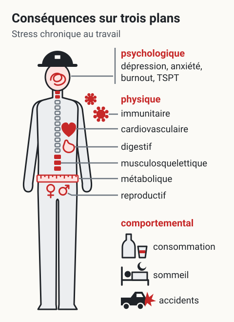
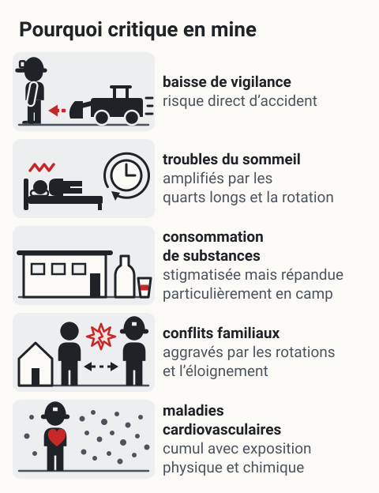

Conséquences du stress sur la santé
L'essentiel : Le stress chronique au travail abîme la santé sur trois plans : physique (cardiovasculaire, musculosquelettique, immunitaire), psychologique (dépression, anxiété, burnout, TSPT) et comportemental (consommation, sommeil, accidents). Les méta-analyses sont sans ambiguïté : un environnement de travail dégradé augmente significativement le risque de maladies majeures et de mortalité prématurée.
{kind=link}

Toucher l'image pour l'agrandirLes conséquences du stress chronique au travail sur les trois plans que nomme la page : physique, psychologique et comportemental. Schéma de principe : organes situés à grands traits, sans chiffre.
D’après cette page : L’essentiel et les tableaux Conséquences physiques, Conséquences psychologiques et Conséquences comportementales. Schéma de principe : organes situés à grands traits, sans chiffre, délai ni risque relatif.
Conséquences physiques
| Système | Conséquences documentées |
|---|---|
| Cardiovasculaire | Infarctus, AVC, hypertension, arythmies |
| Musculosquelettique | Lombalgies, cervicalgies, troubles musculosquelettiques chroniques |
| Immunitaire | Infections plus fréquentes et prolongées |
| Métabolique | Diabète de type 2, obésité abdominale |
| Digestif | Troubles fonctionnels, ulcères |
| Reproductif | Troubles du cycle, baisse de libido, infertilité |
Données clés : la méta-analyse Kivimäki et al. (2012) sur 200 000 travailleurs montre que le job strain augmente de 23 % le risque de maladie cardiovasculaire. Le risque cumulatif sur 20 ans est substantiel.
Conséquences psychologiques
| Trouble | Lien avec stress chronique au travail |
|---|---|
| Dépression majeure | Risque doublé en cas de job strain (Stansfeld & Candy, 2006) |
| Trouble anxieux généralisé | Risque 1,5 à 2 fois supérieur |
| Épuisement professionnel (burnout) | Conséquence directe de l'exposition prolongée |
| TSPT | Suite à un événement traumatique non géré |
| Trouble de l'usage de substances | Auto-médication par alcool, drogues, médicaments |
| Idéation suicidaire | Augmentation significative en contextes Risques Psychosociaux (RPS) marqués |
Voir : PHQ-9 (dépression), K10 (détresse), PCL-5 (TSPT), MBI, épuisement professionnel (burnout).
Conséquences comportementales
| Comportement | Manifestation |
|---|---|
| Sommeil | Insomnie, mauvaise qualité de récupération |
| Alimentation | Sur-consommation ou sous-alimentation, malbouffe |
| Substances | Hausse alcool, tabac, cannabis, médicaments |
| Activité physique | Baisse de l'activité, sédentarité |
| Relations sociales | Isolement, conflits familiaux, séparations |
| Performance | Erreurs, oublis, baisse de la vigilance |
| Accidents | Risque accru d'accidents du travail et de la route |
Au niveau organisationnel : absentéisme, présentéisme (présent au travail mais inefficace), roulement de personnel, baisse de productivité, hausse des coûts CNESST.
Application en mines
{kind=link}

Toucher l'image pour l'agrandirLa page nomme cinq conséquences du stress spécifiquement préoccupantes en milieu minier et dit pourquoi chacune est critique en mine. Schéma de principe, dans l’ordre du tableau, sans chiffre ni classement.
D’après cette page, section Application en mines (tableau des conséquences spécifiquement préoccupantes en milieu minier). Schéma de principe : scènes d’illustration, sans chiffre ni classement.
Conséquences spécifiquement préoccupantes en milieu minier
| Conséquence | Pourquoi critique en mine |
|---|---|
| Baisse de vigilance | Risque direct d'accident en environnement à haut risque |
| Troubles du sommeil | Amplifiés par les quarts longs et la rotation Comparatif des cycles FIFO (14/14, 20/10, 21/7) |
| Consommation de substances | Stigmatisée mais répandue, particulièrement en camp |
| Conflits familiaux | Aggravés par les rotations et l'éloignement |
| Maladies cardiovasculaires | Cumul avec exposition physique et chimique des opérations |
Coût pour l'employeur : un cas d'invalidité psychologique prolongée coûte typiquement entre 50 000 $ et 200 000 $ entre indemnités, remplacement, perte de productivité et hausse de cotisation CNESST.
Documents et outils
| Document | Type | Source |
|---|---|---|
| Méta-analyses Stansfeld & Candy, Kivimäki et al. | Articles PDF | Bibliothèques universitaires |
| Trousse INSPQ de surveillance de la santé mentale | INSPQ | |
| Fiches CCHST sur le stress et la santé | Pages web | cchst.ca |
| Études INSPQ sur le coût social des RPS | Rapports | INSPQ |
| Données CNESST, rôles et pouvoirs sur les lésions psychologiques | Statistiques | cnesst.gouv.qc.ca |
Voir le centre de ressources : 📁 Documents et outils.
Pour aller plus loin
Références
- Stansfeld, S. & Candy, B. (2006). Psychosocial work environment and mental health, a meta-analytic review. Scand J Work Environ Health, 32(6), 443-462.
- Kivimäki, M. et al. (2012). Job strain as a risk factor for coronary heart disease, a collaborative meta-analysis. The Lancet, 380(9852), 1491-1497.
- Theorell, T. et al. (2015). A systematic review including meta-analysis of work environment and depressive symptoms. BMC Public Health, 15, 738.
Articles wiki connexes
Pages qui pointent ici (14)
- ✅ Santé mentale au travail, concepts de base SST psychosociale
- 🔤 Index alphabétique des articles SST psychosociale
- Charge de travail élevée SST psychosociale
- Job strain et maladie coronarienne (Kivimäki, 2012) SST psychosociale
- Job strain et maladies cardio-vasculaires SST psychosociale
- Lien entre RPS et invalidité prolongée SST psychosociale
- Modèle de Sélye, syndrome général d'adaptation SST psychosociale
- Relation stress-performance SST psychosociale
- Santé Mentale SST psychosociale
- Santé Mentale SST psychosociale
- Stress chronique SST psychosociale
- Stress et santé SST psychosociale
- Symptômes et signaux d'alerte SST psychosociale
- Troubles de santé mentale au travail SST psychosociale